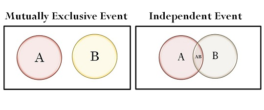

Cracking the Coding Interview
Table of Contents
- 1. The Interview Process
- 2. Behind the Scenes
- 3. Special Situations
- 4. Before the Interview
- 5. Behavioral Questions
- 6. Big O
- 7. Technical Questions
- 8. The Offer and Beyond
- 9. Arrays and Strings
- 10. Linked Lists
- 11. Stacks and Queues
- 12. Trees and Graphs
- 12.1. Type of Trees
- 12.2. Binary Tree Traversal
- 12.3. Binary Heaps
- 12.4. Tries
- 12.5. Graphs
- 12.6. Graph Search
- 12.7. Question: Check Balanced
- 12.8. Question: Validate BST
- 12.9. Question: Build Order (Incomplete)
- 12.10. Question: First Common Ancestor (Incomplete)
- 12.11. Question: BST Sequences (Incomplete)
- 12.12. Question: Check Subtree (Incomplete)
- 12.13. Question: Random Node (Incomplete)
- 12.14. Question: Paths with Sum (Incomplete)
- 13. Bit Manipulation
- 13.1. Bit Facts and Tricks
- 13.2. Two's Complement and Negative Numbers
- 13.3. Arithmetic vs. Logical Right Shift
- 13.4. Common Bit Tasks
- 13.5. Question: Binary to String
- 13.6. Question: Flip Bit to Win (Incomplete)
- 13.7. Question: Next Number (Incomplete)
- 13.8. Question: Conversion
- 13.9. Question: Pairwise Swap
- 13.10. Question: Draw Line (Incomplete)
- 14. Math and Logic Puzzles
- 15. Object-Oriented Design (Incomplete)
- 16. Recursion and Dynamic Programming
- 16.1. How to Approach
- 16.2. Recursive vs. Iterative Solutions
- 16.3. Dynamic Programming & Memoization
- 16.4. Question: Recursive Multiply
- 16.5. Question: Permutations without Dups
- 16.6. Question: Permutations with Duplicates (Incomplete)
- 16.7. Question: Paren
- 16.8. Question: Coins
- 16.9. Question: Stack of Boxes (Incomplete)
- 16.10. Question: Boolean Evaluation (Incomplete)
- 17. System Design and Scalability (Incomplete)
- 18. Sorting and Searching
- 19. Testing
- 20. C and C++
- 21. Databases
- 22. Moderate
1 The Interview Process
The interviewer is looking to evaluate your ability to solve algorithmic problems you haven't seen before.
If you had to design/architect a new solution, did you structure the problem well and think through the tradeoffs of different decisions?
Interviewers justify the reliance on data structures and algorithms by arguing that it's a good "proxy". It's reasonably well-correlated with being a good developer.
Interviewers assess you relative to other candidates on that same question by the same interviewer. It's a relative comparison. It's not about the candidates he's interviewing that week. It's about all the candidates that he's ever asked this question to.
2 Behind the Scenes
The "screening" interview often involves coding and algorithms questions. Ask your recruiting coordinator what position your interviewer holds (or what the interview might cover).
Most companies get back after about a week with next steps (offer, rejection, further interviews, or just an update on the process). If you have waited more than a week, you should follow up with your recruiter.
2.1 The Microsoft Interview
"Why do you want to work for Microsoft?" In this question, Microsoft wants to see that you're passionate about technology.
2.2 The Amazon Interview
The "bar raiser" interviewer is charged with keeping the interview bar high. This person has both signifcant experience with interviews and veto power in the hiring decision.
Amazon cares a lot about scale.
2.3 The Google Interview
Feedback is typically broken down intofour categories (Analytical Ability, Coding, Experience, and Communication)
Google puts a strong focus on analytical (algorithm) skills, regardless of experience.
2.4 The Facebook Interview
Facebook interviews developers for the company "in general", not for a specifc team.
2.5 The Palantir Interview
"Pooled" interviews: where you interview with the company as a whole, not with a specifc team.
3 Special Situations
Practice testing the coding questions. Ask yourself, "How would I test this?"
3.1 Startups
For the hottest startups, often the best way in is through a personal referral.
Establishing a friendly, engaging conversation with your interviewers is your ticket to many job offers.
3.2 Acquisitions and Acquihires
During the technical due diligence process for many acquisitions, the acquirer will often interview most or all of a startup's employees.
The famous multi-billion dollar acquisitions generally did not have to go through this process. Those acquisitions, after all, are usually about the user base and community, less so about the employees or even the technology.
There is a big gray area between acquihires (i.e., talent acquisitions) and product acquisitions. Many startups are acquired for the team and ideas behind the technology.The acquirer might discontinue the product, but have the team work on something very similar.
3.3 For Interviewers
Walk through the brute force solution and look for areas to optimize.
Learn to distinguish between "I'm stuck and have no idea what to do" and "I'm thinking in silence".
| Sanity Check | - easy problem-solving or design questions |
|---|---|
| - assess a minimum degree of competence in problem-solving | |
| - used early in the process (to filter out the worst candidates) | |
| Quality Check | - more challenging questions |
| - designed to be rigorous and really make a candidate think | |
| Specialist Questions | - test knowledge of specifc topics |
| - for skills an engineer couldn't quickly learn on the job | |
| Proxy Knowledge | - knowledge expected for a candidate at their level to know |
| - if a candidate has worked in depth with certain technologies, | |
| but can't talk about certain things, that suggests an issue |
4 Before the Interview
4.1 Writing a Great Resume
Shorter resumes are often more impressive. Limit the content to the most impressive items. It is strongly advised to keep a resume to one page if you have less than ten years of experience. More experienced candidates can often justify 1.5 - 2 pages otherwise. Recruiters only spend a fixed amount of time (about 10 seconds) looking at your resume.
Discuss your accomplishments with the fllowing approach: Accomplished X by implementing Y which led to Z. Show what you did, how you did it, and what the results were. Try to make the results "measurable".
Include your 2 - 4 most signifcant projects.
List most of the languages you've used, but add your experience level. But don't be too language focused. There is a belief in many circles that the best software engineers don't defne themselves around a particular language.
Do not include age, marital status, or nationality. Personal information is not appreciated by companies, as it creates a legal liability for them.
5 Behavioral Questions
5.1 Interview Preparation Grid
| Project 1 | |
|---|---|
| Challenges | |
| Mistakes/Failures | |
| Enjoyed | |
| Leadership | |
| Conflicts | |
| What You'd Do Differently |
5.1.1 What questions should you ask the interviewer?
| Genuine Questions | - What is the ratio of testers to developers to program managers? |
|---|---|
| - What is the interaction like? | |
| - How does project planning happen on the team? | |
| - What brought you to this company? | |
| - What has been most challenging for you? | |
| Insightful Questions | - I noticed that you use technology X. How do you handle problem Y? |
| - Why did the product choose to use the X protocol over theY protocol? | |
| Passion Questions | - What opportunities are there at this company to learn about X? |
| - Could you tell me a bit more about how X works? |
5.2 Know Your Technical Projects
Prepare 1 - 3 projects that you can talk about in detail. Be able to discuss the technical components in depth. Criteria:
- The project had challenging components.
- You played a central role.
- You can talk at technical depth.
Be able to talk about the challenges, mistakes, technical decisions, choices of technologies (and tradeoffs of these), and the things you would do differently, how you would scale the application.
5.3 Responding to Behavioral Questions
Be specific to make yourself sound good without being arrogant. Specifcity means giving just the facts and letting the interviewer derive an interpretation.
Stay light on details and just state the key points. Explain the impact. Offer the interviewer the opportunity to drill in further: "I can go into more details if you'd like".
| Nugget First | Start with a "nugget" that succinctly describes what the response will be about. |
|---|---|
| S.A.R | Situation, Action, Result |
Analyze the actions you took and how you reacted. What personality attributes does your reaction demonstrate?
| Less Clear Attribute | - "I called up the client and told him what happened." |
|---|---|
| More Clear Attribute | - "I made sure to call the client myself, because I knew |
| (Empathy and Courage) | that he would appreciate hearing it directly from me." |
5.4 So, tell me about yourself …
- Current role (headline only)
- College
- Post-college and onwards
- Current role (details)
- Outside of work
- Wrap up
Sometimes hobbies can be useful:
- The hobby is technical. This not only boosts your actual skillset, but it also shows passion for technology.
- The hobby demonstrates a positive personality attribute.
6 Big O
6.1 An Analogy
A one-terabyte (1 TB) fle could take more than a day to transfer electronically. It would be much faster to just fly it across the country.
| Electronic Transfer: | The time to transfer the file increases linearly with the size of the file. |
|---|---|
| Airplane Transfer: | As the size of the file increases, it won't take any longer to transfer the file. |
6.2 Time Complexity
| \(O\) (big O) | - the upper bound on runtime |
|---|---|
| - An algorithm that prints all the values in an array could be described as $O(N)$, | |
| but it could also be described as $O(N^2)$, $O(N^3)$, or $O(2^N)$. It's technically | |
| true (although not terribly useful). | |
| $\Omega$ (big omega) | - the lower bound on runtime |
| $\Theta$ (big theta) | - the tight bound on runtime |
| - An algorithm is $\Theta(N)$ if it is both $O(N)$ and $\Omega(N)$. |
Industry's meaning of big O is closer to what academics mean by $\Theta$.
We rarely ever discuss best case time complexity, because it's not a very useful concept. And for many, probably most, algorithms, the worst case and the expected case are the same.
6.3 Space Complexity
Space complexity is a parallel concept to time complexity.
Stack space in recursive calls counts, too.
6.4 Drop the Constants
Big O just describes the rate of increase. For this reason, we drop the constants in runtime.
int min = Integer.MAX_VALUE; int max = Integer.MIN_VALUE; for (int x : array) { if (x < min) min = x; if (x > max) max = x; }
int min = Integer.MAX_VALUE; int max = Integer.MIN_VALUE; for (int x : array) { if (x < min) min = x; } for (int x : array) { if (x > max) max = x; }
Two non-nested loops does not make the runtime $O(2N)$ in this case. If you're going to count the number of instructions, then you'd have to go to the assembly level.
6.5 Amortized Time
An Arraylist is implemented with an array. When the array hits capacity, the Arraylist class will create a new array with double the capacity and copy all the elements over to the new array. If the array contains N elements, then inserting a new element will take $O(N)$ time. However the vast majority of the time insertion will be in $O(1)$ time.
Amortized time allows us to describe that worst case happens every once in a while. But once it happens, it won't happen again for so long that the cost is "amortized". In this case, \(N\) insertions take $O(2N)$ (1 + 2 + 4 + … + N) time. The amortized time for each insertion is $O(1)$.
6.6 Recursive Runtimes
The base of a log doesn't matter since logs of different bases are only different by a constant factor. However, the base of an exponent does matter.
6.7 Examples and Exercises
6.7.1 Example 8
Suppose we had an algorithm that took in an array of strings, sorted each string, and then sorted the full array. What would the runtime be?
Many candidates will reason the following: sorting each string is $O(N \log{N})$ and we have to do this for each string, so that's $O(N^2 \log{N})$. The problem is that we used N in two different ways. In one case, it's the length of the string. And in another case, it's the length of the array.
Let \(s\) be the length of the longest string. Let \(a\) be the length of the array. Sorting each string is $O(s \log{s})$. We have to do this for every string so that's $O(as \log{s})$. Each string comparison takes $O(s)$ time. There are $O(a \log{a})$ comparisons, therefore this will take $O(as \log{a})$ time.
6.7.2 Example 12
void permutation(String str) { permutation(str, ""); } void permutation(String str, String prefix) { if (str.length() == 0) { // Base case System.out.println(prefix); // O(N) since each character needs to be printed } else { // Before base case for (int i= 0; i < str.length(); i++) { String rem = str.substring(0, i) + str.substring(i + 1); // O(N) due to string concatenation permutation(rem, prefix + str.charAt(i)); } } }
不理解：How many times does permutation get called before its base case (how many times lines 9 through 12 are hit)? Picture a large call tree representing all the calls. There are $N!$ permutations (leaves). Each leaf is attached to a path of length \(N\). Therefore, there will be no more than $N \times N!$ nodes (function calls) in this tree.
6.7.3 Example 13
int fib(int n) { if (n <= 0) return 0; else if (n == 1) return 1; return fib(n - 1) + fib(n - 2); }
There are 2 branches per call, and we go as deep as \(N\), therefore the runtime is $O(2^N)$. But it's actually closer to $O(1.6^N)$. Because at the bottom of the call stack, there is sometimes only one call.
Generally speaking, an algorithm with multiple recursive calls takes exponential runtime.
6.7.4 Example 15
The fllowing code prints all Fibonacci numbers from O to N. However, this time, it stores (i.e., caches) previously computed values in an integer array. If it has already been computed, it just returns the cache. Memoization is a very common one to optimize exponential time recursive algorithms.
6.7.5 Example 16
An approach of runtime is to think about how the runtime changes as N gets bigger.
7 Technical Questions
7.1 Power of 2 Table
| Power of 2 | Exact Value | Approx. Value | Bytes |
|---|---|---|---|
| 8 | 256 | ||
| 10 | 1024 | 1 thousand | 1 KB |
| 16 | 65,536 | ||
| 20 | 1,048,576 | 1 million | 1 MB |
| 30 | 1,073,741,824 | 1 billion | 1 GB |
| 32 | 4,294,967,296 | ||
| 40 | 1,099,511,627,776 | 1 trillion | 1 TB |
7.2 Walking Through a Problem
| 1. Listen | |
|---|---|
| 2. Example | Use examples that are big enough and are not special cases. |
| 3. Brute Force | Get a brute-force solution as soon as possible. State a naive algorithm and |
| its runtime, then optimize from there. | |
| 4. Optimize | Walk through brute force solution with BUD optimization. |
| – Look for any unused info. | |
| – Solve it manually on an example, then reverse engineer the thought process. | |
| – Make a time vs. space tradeoff. Hash tables are especially useful. | |
| 5. Walk Through | Walk through the optimal solution in detail. |
| 6. Implement | Modularize from the beginning and refactor to clean up anything that isn't |
| beautiful. | |
| 7. Test | – Conceptual test: walk through the code like a detailed code review. |
| – Unusual or non-standard code. | |
| – Hot spots, like arithmetic and null nodes. | |
| – Small test cases. | |
| – Special cases and edge cases. |
7.2.1 Listen
To-be-run-repeatedly situation is different from the run-once situation. Perhaps this means that data should be cached. Or perhaps it justifes some reasonable precomputation on the initial dataset.
It might be useful to write the pertinent infrmation on the whiteboard.
7.2.2 Example
Special cases can be very deceiving. Instead, create an example that is:
– Specifc. It should use real numbers or strings.
– Sufficiently large. Most examples are too small, by about 50%.
– Not a special case.
7.2.3 Brute Force
Even if it's obvious, it's not necessarily obvious for all candidates. Don't let the interviewer think that you're struggling to see even the easy solution. Explain what the space and time complexity is, and then dive into improvements.
7.2.4 Optimize
– Look for any unused information.
– Use a fresh example. A different example helps to see a pattern in the problem.
– Make time vs. space tradeoff. Sometimes storing extra state can help optimize the runtime.
– Precompute information. Reorganize input or compute some values upfront may help save time.
– Use a hash table.
– Think about BCR (Best Conceivable Runtime).
7.2.5 Walk Through
Walk through the algorithm and get a feel for the structure of the code.
7.2.6 Implement
– Modularized code. Sometimes pretend you have a certain function, and fill in the details later.
– Error checks. Add a TODO and explain what you'd like to test.
– Use other classes/structs where appropriate. Pretend it exists and deal with the details later.
If there is something that can be refactored later, explain to the interviewer and decide whether or not it's worth the time to do so.
7.2.7 Test
– Conceptual test. Read and analyze what each line of code does.
– Hot spots. Base cases in recursive code. Integer division. Null nodes in binary trees. The start and end of iteration through a linked list.
– Small test cases.
– Special cases. Null or single element values. Extreme cases.
7.3 Look for BUD
– B ottlenecks
– U nnecessary work
– D uplicated work
These are three of the most common things that an algorithm can "waste" time doing.
7.3.1 Bottlenecks
A two-step algorithm: first sort an array, and then look for elements with a particular property. The first step is $O(N \log{N})$. The second step to $O(\log{N})$ or $O(1)$, but it's not a priority, as the $O(N \log{N})$ is the bottleneck.
Example: Given an array of distinct integer values, count the number of pairs of integers that have difference
k. For example, given the array{1, 7, 5, 9, 2, 12, 3}andk = 2, there are four pairs:(1, 3), (3, 5), (5, 7), (7, 9).$O(N \log{N})$ 算法：将数组排序，按照以
k为除数的余数分组，遍历每一组，相邻两个数的差为k时就是一组结果。Sorting is the bottleneck. How to find things quickly in an unsorted array? With a hash table. Throw everything in the array into the hash table. Then look up if
x + korx - kexists for each element. We can do this in $O(N)$ time.
7.3.2 Unnecessary Work
Example: Print all positive integer solutions to the equation $a^3 + b^3 = c^3 + d^3$ where $a, b, c, d$ are integers between 1 and 1000.
$O(N^2)$ 算法：两层循环遍历所有两个（不重复）数字组合，将立方和作为键、数字组合作为值存入哈希表，如果一个立方和在哈希表中已存在，表示找到一组解。
7.4 DIY (Do It Yourself)
Our brains are funny like this. Throw the phrase "Design an algorithm" in there and people often get all jumbled up. But give people an actual example, their intuition gives them a very nice algorithm. When you get a question, try working it through intuitively on a real example.
Example: Given a smaller string
sand a bigger stringb, design an algorithm to find all permutations ofawithinb.$O(N)$ 算法：Maintain a "char map" while iterating string
b, each value indicates if the char in current substring is in excess (positive value) or in short (negative value) comparing with stringa. Use adiffvalue to check if all values in map are 0 at current index. When a value in map becomes 0, diff value minus 1, otherwise plus 1. Ifdiff = 0, then current index is the starting position of a substring permutation.E.g.
string a = abc, string b = abdbca
idx = 0, substring = "abd", map = { a = 0, b = 0, c = -1, d = 1 }, diff = 2
idx = 1, substring = "bdb", map = { a = -1, b = 1, c = -1, d = 1 }, diff = 4
idx = 2, substring = "dbc", map = { a = -1, b = 0, c = 0, d = 1 }, diff = 2
idx = 3, substring = "bca", map = { a = 0, b = 0, c = 0, d = 0 }, diff = 0
7.5 Base Case and Build
Solve the problem first for a base case (e.g., n = 1) and then try to build up from there. Base Case and Build algorithms often lead to natural recursive algorithms.
Example: Print all permutations of a string. For simplicity, assume all characters are unique.
$O(N! + (N-1)! + ... 1)$ 算法：递归计算，遍历每个字符分别作为前缀，剩余字符的置换作为后缀。
permute("abc") = concat('a', permute("bc")) + concat('b', permute("ac")) + concat('c', permute("ab"))。
7.6 Data Structure Brainstorm
Run through a list of data structures and try to apply each one.
A heap is really good at basic ordering and keeping track of max and mins.
Example: Numbers are randomly generated and stored into an (expanding) array. How to keep track of the median?
Iterate the numbers and use 2 heaps to store the bigger half and smaller half of the numbers. The bigger half is kept in a min heap, and the smaller half in a max heap. If the heaps are not of the same size, balance them by popping one number from a heap and pushing it into the other. At the end, the potential median numbers are the roots of both heaps.
7.7 Best Conceivable Runtime (BCR)
Best Conceivable Runtime (BCR) is the best runtime that could be conceived of any solution to a problem. BCR is not necessarily achievable, what it means is that it is impossible to do better.
For example, to compute the number of elements that two arrays have in common, it is impossible to do that in better than $O(A + B)$ time. Or to print all pairs of values within an array, it is impossible do that in better than $O(N^2)$.
BCR The Best Conceivable Runtime is for a problem. It has no particular connection to a specific algorithm. The Best Case Runtime (also BCR) is for a specific algorithm, and is a mostly useless value.
For example, looking for the optimal algorithm when you have BCR and a brute force solution:
| Brute Force: | $O(N^2)$ |
|---|---|
| Optimal Algorithm: | ? |
| BCR: | $O(N)$ |
Between $O(N)$ and $O(N^2)$ there could be infinite runtimes, but both in interviews and in real life, unusual runtimes don't come up often. In this case, it's most likely $O(N)$ or $O(N \log {N})$.
Any work less than or equal to BCR won't impact the runtime. For example, if BCR is $O(N)$, then any work done in $O(1)$ or $O(N)$ can be dropped from the runtime because it's not dominant.
In general, we cannot search an array, even a sorted array, in better than $O(\log{N})$ time. Unless the BCR is already equal to or bigger than $O(N)$, then a hash table ($O(N)$, equal to or less than BCR, therefore can by dropped) can be used to make search time $O(1)$.
BCR tells us when it is "done" in terms of optimizing the runtime. We should then move on to reduce the space complexity.
When BCR and minimal space have been reached, then there is no room for further improvements.
7.8 Handling Incorrect Answers
It's not a binary evaluation. Rather, it's about how optimal the final solution was, how long it took to get there, how much help was needed, and how clean was the code. There is a range of factors.
7.9 The "Perfect" Language for Interviews
Some operations are easier in some languages than others. For example, in Python, you can very easily return multiple values from a function. In Java, the same action would require a new class.
7.10 What Good Coding Looks Like
Constant factors might get dropped when computing the big O time, but in real life, they can very much matter ($O(N)$ vs. $O(10N)$).
7.10.1 Appropriate Code Reuse
Example: Write a function to check if the value of a binary number (passed as a string) equals the hexadecimal representation of a string.
boolean compareBinToHex(String binary, String hex) { int n1 = convertFromBase(binary, 2); int n2 = convertFromBase(hex, 16); if (n1 < 0 || n2 < 0) { return false; } return n1 == n2; } int convertFromBase(String number, int base) { if (base < 2 || (base > 10 && base != 16)) return -1; int value = 0; for (int i = number.length() - 1; i >= 0; i--) { int digit = digitToValue(number.charAt(i)); if (digit < 0 || digit >= base) { return -1; } int exp = number.length() - 1 - i; value += digit * Math.pow(base, exp); } return value; } int digitToValue(char c) { ... }
7.10.2 Modular
Modular code is easily testable.
7.10.3 Flexible and Robust
Writing flexible, general-purpose code mean using variables instead of hard-coded values or using templates/generics to solve a problem.
7.10.4 Error Checking
One sign of a careful coder is not making assumptions about the input. Instead, validate that the input is what it should be, either through ASSERT statements or if statements.
8 The Offer and Beyond
8.1 Handling Offers and Rejection
If you're still waiting to hear back from other companies, you can ask for an extension. Companies will usually try to accommodate this, if possible.
When you do get the unfortunate call, use this as an opportunity to build a bridge to re-apply. Thank your recruiter for his time, explain that you're disappointed but that you understand their position, and ask when you can reapply to the company.
8.2 Evaluating the Offer
Salary isjust one part of the fnancial compensation.
- Many companies offer a signing bonus and/or relocation.
- Taxes and other cost of living differences can make a big difference in takehome pay.
- Annual bonuses at tech companies can range from anywhere from 3% to 30%.
- Stock compensation between companies can be compared by amortizing it over 3 years and then lumping that value into salary.
:_What you learn and how a company advances your career ofen makes far more of a difference to your long term finances than the salary._
The more stable companies are also often growing more slowly.
If you are given the opportunity to switch teams easily, you'll have an opportunity to find a team and product that matches you well.
8.3 Negotiation
Negotiation isn't fun for most of us. But still, the financial benefits of negotiation are usually worth it.
- Have a specifc "ask": It's more effective to ask for an additional $7000 in salary than to just ask for "more".
- Companies are ofen more willing to negotiate on non-salary components. Consider
asking for more equity or a bigger signing bonus.
8.4 On the Job
When you're enjoying your job, it's very easy to get wrapped up in it and not realize that your career is not advancing. This is why you should outline your career path before starting a new job.
Establish strong relationships with your manager and teammates. When employees leave, keep in touch with them. Just a friendly note a few weeks after their departure will help to bridge that connection from a work acquaintance to a personal acquaintance.
Set a goal of interviewing at least once a year, even if you aren't actively looking for a new job. This will keep your interview skills fresh, and also keep you in tune with what sorts of opportunities (and salaries) are out there.
9 Arrays and Strings
Array questions and string questions are often interchangeable.
9.1 Hash Tables
A hash table is a data structure that maps keys to values for highly effcient lookup.
In a simple implementation, use an array of linked lists and a hash code function. If the number of collisions is very high, the worst case runtime is $O(N)$, where \(N\) is the number of keys. Generally assume a good implementation that keeps collisions to a minimum, in which case the lookup time is $O(1)$.
Alternatively, implement the hash table with a balanced binary search tree. This gives an $O(\log{N})$ lookup time. The advantage of this is potentially using less space, since we no longer allocate a large array. We can also iterate through the keys in order, which can be useful sometimes.
9.2 ArrayList & Resizable Arrays
In some languages, arrays (lists) are automatically resizable. In other languages, like Java, arrays are fixed length.
An ArrayList (the name of the data structure as well as the "resizing factor" can vary) is an array that resizes itself as needed while still providing $O(1)$ access. A typical implementation is that when the array is full, the array doubles in size. Each doubling takes $O(n)$ time, but happens so rarely that its amortized insertion time is still $O(1)$ ($1 + 2 + ... + \frac{N}{4} + \frac{N}{2} < N$).
9.3 StringBuilder
To concatenate a list of strings, assume that the strings are all the same length \(x\) and that there are \(n\) strings. On each concatenation, a new copy of the string is created, and the two strings are copied over, character by character. The first iteration requires to copy \(x\) characters. The second iteration requires copying $2x$ characters. The total time therefore is $O(x + 2x + \ldots + nx)$. This reduces to $O(xn^2)$.
StringBuilder simply creates a resizable array of all the strings, copying them back to a string only when necessary.
9.4 Question: Is Unique
Implement an algorithm to determine if a string has all unique characters. What if you cannot use additional data structures?
- Ask if the charset is ASCII or a Unicode.
- Immediately return
falseif the string length exceeds the number of unique characters in the charset.
9.4.1 Time
Let c be the size of the charset. Time complexity is $O(\text{min}(c, n))$ or $O(c)$. Time complexity can be $O(1)$, since it will never iterate through more than the number of characters in the charset.
9.4.2 Space
Space complexity is $O(c)$ but can also be reduced by factor of 8 by using a bit vector.
If it's not allowed to use additional data structures:
- Compare every character of the string to every other character of the string, which takes $O(n^2)$ time.
- Sort the string (if allowed to modify) in $O(n \log{n})$ time and then linearly check the string for neighboring characters.
9.5 Question: Check Permutation
Given two strings, write a method to decide if one is a permutation of the other.
- Ask if the comparison is case sensitive.
- Ask if whitespace is signifcant.
Comparing the sorted versions of the strings is not optimal, but it's clean, simple and easy to understand. In a practical sense, this may be a superior way.
9.6 Question: Palindrome Permutation
Check if a string is a permutation of a palindrome. A palindrome is a word or phrase that is the same forwards and backwards.
To be a permutation of a palindrome, a string can have no more than one character that is odd. Instead of checking the number of odd counts at the end, we can check as we go along.
We don't actually need to know the counts. We just need to know if the count is even or odd. Given this, we can use a single integer (as a bit vector). At the end of the iteration, we check that at most one bit in the integer is set to 1.
If 0 bit is 1: |
Equals to 0. |
|---|---|
If 1 bit is 1: |
Subtract 1 and do bit AND, the result is 0. |
00010000 - 1 = 00001111 |
|
00010000 & 00001111 = 0 |
Generating all permutations requires factorial time (worse than exponential time), and it is essentially infeasible to perform on strings longer than about 10-15 characters.
9.7 Question: Zero Matrix
If an element in an $M \times N$ matrix is 0, change its entire row and column to 0.
9.7.1 Space
To be more space efficient, use a bit vector instead of a boolean array.
Or reduce the space to $O(1)$ by using the first row as a replacement for the row array and the first column as a replacement for the column array. Check if the first row and first column have any zeros, and set variables rowHasZero and columnHasZero, and nullif the first row and first column later, if necessary.
10 Linked Lists
The beneft of a linked list is that you can add and remove items from the beginning of the list in constant time.
10.1 The "Runner" Technique
The "runner" (or second pointer) technique is used in many linked list problems.It means to iterate through the linked list with two pointers simultaneously, with one ahead of the other.
For example, a linked list a1->a2->...->an->b1->b2->...->bn, to rearrange it into a1->b1->a2->b2->...->an->bn. Have one pointer p1 (the fast pointer) move every 2 elements for every one move that p2 makes. When p1 hits the end of the linked list, p2 will be at the midpoint. Then, move p1 back to the front
and begin "weaving" the elements.
10.2 Recursive Problems
Many linked list problems rely on recursion.
Recursive algorithms take at least $O(n)$ space, where \(n\) is the depth of the recursive call. All recursive algorithms can be implemented iteratively, although they may be much more complex.
10.3 Question: Delete Middle Node
Delete a node in the middle (could be anyone but the first or the last node, not necessarily the exact middle) of a singly linked list, given only access to that node.
Copy the data from the next node over to the current node, and then to delete the next node. （不需要把删除节点之后的所有节点向前移动。）
This problem cannot be solved if the node to be deleted is the last node in the linked list.
10.4 Question: Partition
Partition a linked list around a value
x, such that all nodes less thanxcome before all nodes greater than or equal tox.E.g.,
x = 5
Input:3 -> 5 -> 8 -> 5 -> 10 -> 2 -> 1
Output:3 -> 1 -> 2 -> 10 -> 5 -> 5 -> 8
Array shifts are very expensive. Shifting elements in linked list is much easier.
Create 2 linked lists: one for elements less than x, and one for elements greater than or equal to x. Then join 2 lists together.
10.5 Question: Palindrome
Check if a linked list is a palindrome.
10.5.1 Reverse
Reverse the linked list and compare the reversed list to the original list. Only need to compare the first half of the list.
10.5.2 Iterative
Push the first half of the elements onto a stack. Use the runner technique, push the data from the slow runner onto a stack. When the fast runner hits the end of the list, the slow runner will have reached the middle of the linked list.
11 Stacks and Queues
A stack allows $O(1)$ time add and remove operations.
Stacks are often used in recursive algorithms: push temporary data onto a stack as it recurses, and then remove them as it backtracks. A stack can also be used to implement a recursive algorithm iteratively.
11.1 Implementing a Stack
A stack can be implemented with an array or a linked list.
11.2 Implementing a Queue
A queue can be implemented with an arrary or a linked list.
Queues are often used in breadth-first search or in implementing a cache.
11.3 Question: Stack Min
Design a stack which, in addition to
pushandpop, has a functionminwhich returns the minimum element.push,popandminshould all operate in $O(1)$ time.
Keep track of the minimum at each state, having each node record what the minimum beneath itself is.
It may waste a lot of space if it is a large stack. An improvement is using an additional stack which keeps track of the mins:
- When pushing to
s1, if the value is smaller than the top ofs2, push it intos2. - When poping from
s1, if the value equals to the top ofs2, pops2as well. - The top of
s2is the current minimum value.
11.4 Question: Queue via Stack
Implement a queue using two stacks.
Use s2 to reverse the order of the elements from s1. On each peek() and pop() operation, pop everything from s1 onto s2, and then push everything back.
Improvement: implement a "lazy" approach where the elements sit in s2 until the elements must be reversed (when push() into s1).
11.5 Question: Animal Shelter
An animal shelter, which holds only dogs andcats, operates on a strictly "first in, first out" basis. People must adopt either the "oldest" (based on arrival time) of all animals at the shelter, or they can select whether they would prefer a dog or a cat (and will receive the oldest animal of that type). They cannot select which specifc animal they would like. Create the data structures to maintain this system and implement operations such as
enqueue,dequeueAny,dequeueDog, anddequeueCat. You may use the built-inLinkedListdata structure.
Use separate queues for dogs and cats. Store a timestamp in each node to mark when each animal was enqueued. dequeueAny will peek at the heads of both the dog and cat queue and return the oldest.
12 Trees and Graphs
12.1 Type of Trees
12.1.1 Binary Search Tree
Under some definitions, a binary search tree cannot have duplicate values. In others, the duplicate values will be on the right or can be on either side. Clarify this with the interviewer.
12.1.2 Balanced Tree
A balanced tree means it's balanced enough to ensure $O(\log{N})$ time for insert and find. Not all trees are balanced. Clarify this with the interviewer.
Two common types of balanced trees are red-black trees and AVL trees.
12.1.3 Complete Binary Tree
A complete binary tree is a binary tree in which every level of the tree is fully filled, except for the last level. To the extent that the last level is filled, it is flled left to right.

12.1.4 Full Binary Tree
A full binary tree is a binary tree in which every node has either zero or two children.

12.1.5 Perfect Binary Trees
A perfect binary tree is one that is both full and complete.
12.2 Binary Tree Traversal
| In-order traversal: | Left branch → Root → Right branch |
|---|---|
| Pre-order traversal: | Root → Left branch → Right branch |
| Post-order traversal: | Left branch → Right branch → Root |
12.3 Binary Heaps
A heap is a complete binary tree, where each node is smaller/bigger than its children. The root is the minimum/maximum node in the tree. 2 key operations on a heap: insert and extract, both take $O(\log{N})$ time.
12.3.1 insert
- Insert the node at the bottom (at the rightmost spot to maintain the complete tree).
- Swap (bubble up) the node with its parent until the appropriate spot.

12.3.2 extract
- Remove the root node.
- Move the last (the bottommost, rightmost) node in the heap to root.
- Swap (bubble down) the root node with one of its children until the appropriate spot.

12.4 Tries
A trie (sometimes called a prefx tree) is a tree in which characters are stored at each node. Each path down the tree may represent a word. A node in a trie could have anywhere from 1 through ALPHABET_SIZE + 1 children (or, 0 through ALPHABET_SIZE if a boolean flag is used instead of a * node).
The * nodes (sometimes called "null nodes") are often used to indicate complete words. The actual implementation of * nodes might be a special type of child, or just a boolean flag terminates within the parent node.

Very commonly, a trie is used for quick prefx lookups. Many problems involving lists of valid words leverage a trie as an optimization. A trie can check if a string is a valid prefix in $O(K)$ time, where \(K\) is the length of the string. This is actually the same runtime as a hash table. A hash table can quickly look up whether a string is a valid word, it cannot tell us if a string is a prefx of any valid words.
12.5 Graphs
A graph is a collection of nodes with edges. A tree is a connected graph without cycles.
- A graph can be either directed or undirected.
- A graph can have cycles. An "acyclic graph" is one without cycles.
12.5.1 Adjacency List
Adjacenct list is the most common way to represent a graph: every vertex (or node) stores a list of adjacent vertices. In an undirected graph, an edge like (a, b) would be stored twice. The Graph class is used because, unlike in a tree, it's not necessarily possible to reach all the nodes from a single node.
class Graph { public Node[] nodes; } class Node { public String name; public Node[] children; }
An array (or a hash table) of lists (arrays, arraylists, linked lists, etc.) can store the adjacency list. It is a bit more compact, but it isn't quite as clean. Use node classes unless there's a compelling reason not to.
0: 1 1: 2 2: 0, 3 3: 2 4: 6 5: 4 6: 5
12.5.2 Adjacency Matrix
An adjacency matrix is an NxN boolean matrix, where a true value at matrix[i][j] indicates an edge from node i to node j. In an undirected graph, an adjacency matrix will be symmetric.

The adjacency list is easier to iterate through the neighbors of a node. The adjacency matrix needs to iterate through all the nodes to identify a node's neighbors.
12.6 Graph Search
The two most common ways to search a graph are DFS and BFS. DFS is often preferred to visit every node in the graph. BFS is generally better to find the path between two nodes.
12.6.1 DFS
Tree traveral is a form of DFS. The difference is that when implementing this algorithm for a graph, it must check if the node has been visited, to avoid infinite loop.
void search(Node root) { if (root == null) return; visit(root); // Node checking root.visited = true; for each (Node n in root.adjacent) { if (n.visited == false) { search(n); } } }
12.6.2 BFS
BFS uses a queue instead of recursion.
void search(Node root) { Queue queue = new Queue(); root.marked = true; queue.enqueue(root); while (!queue.isEmpty()) { Node r = queue.dequeue(); visit(r); foreach (Node n in r.adjacent) { if (n.marked == false) { n.marked = true; queue.enqueue(n); } } } }
12.6.3 Bidirectional Search
Bidirectional search is used to find the shortest path between a source and destination node. It means running 2 simultaneous BFS, one from each node. When the searches collide, a path is found.

Consider a graph where every node has at most \(k\) adjacent nodes and the shortest path from node s to node t has length \(d\).
- In traditional BFS, the runtime is $O(k^d)$.
- In bidirectional search, the 2 searches collide after $\frac{d}{2}$ levels, so the runtime is $O(k^{\frac{d}{2}})$.
12.7 Question: Check Balanced
Check if a binary tree is balanced. A balanced tree is defined to be a tree such that the heights of the two subtrees of any node never differ by more than one.
We can recurse through the entire tree, and for each node, compute the heights of each subtree. The algorithm is $O(N \log{N})$ since each node is "touched" once per node above it.
To improve, check if the tree is balanced at the same time as checking heights. Return an error code (e.g. Integer.MIN_VALUE) when a subtree isn't balanced.
int checkHeight(TreeNode root) { if (root == null) return -1; int leftHeight = checkHeight(root.left); if (leftHeight == Integer.MIN_VALUE) return Integer.MIN_VALUE; // Pass error up int rightHeight = checkHeight(root.right); if (rightHeight == Integer.MIN_VALUE) return Integer.MIN_VALUE; // Pass error up int heightDiff = leftHeight - rightHeight; if (Math.abs(heightDiff) > 1) { return Integer.MIN_VALUE; // Pass error up } else { return Math.max(leftHeight, rightHeight) + 1; } } boolean isBalanced(TreeNode root) { return checkHeight(root) != Integer.MIN_VALUE; }
12.8 Question: Validate BST
Check if a binary tree is a binary search tree.
12.8.1 Solution: In-Order Traversal
Do an in-order traversal, copy the elements to an array, and then check to see if the array is sorted.
The problem is that it can't handle duplicate values. If we assume that the tree cannot have duplicate values, then this approach works.
The array is not actually necessary. It only needs to track the last element and compare it as it goes.
Integer last_printed = null; // Static variable boolean checkBST(TreeNode n) { if (n == null) return true; // Recurse left if (!checkBST(n.left)) return false; // Check current if (last_printed != null && n.data <= last_printed) { return false; } last_printed = n.data; // Recurse right if (!checkBST(n.right)) return false; return true; }
12.9 Question: Build Order (Incomplete)
There is a list of projects and a list of dependencies (pairs of projects, where the second project is dependent on the first project). All of a project's dependencies must be built before the project is. Find a build order that will allow the projects to be built. If there is no valid build order, return an error.
Projects:
a, b, c, d, e, f
Dependencies:(a, d), (f, b), (b, d), (f, a), (d, c)
Output:f, e, a, b, d, c
12.10 Question: First Common Ancestor (Incomplete)
Find the first common ancestor of 2 nodes in a binary tree. Avoid storing additional nodes in a data structure. NOTE: This is not necessarily a binary search tree.
12.11 Question: BST Sequences (Incomplete)
A binary search tree was created by traversing through an array from left to right and inserting each element. Given a binary search tree with distinct elements, print all possible arrays that could have led to this tree.
12.12 Question: Check Subtree (Incomplete)
T1 and T2 are two very large binary trees, with T1 much bigger than T2. Create an algorithm to determine if T2 is a subtree of T1. A tree T2 is a subtree of T1 if there exists a node
nin T1 such that the subtree ofnis identical to T2.
12.13 Question: Random Node (Incomplete)
Implement a binary search tree from scratch, which, in addition to
insert,find, anddelete, has a methodgetRandomNode()which returns a random node from the tree. All nodes should be equally likely to be chosen.
12.14 Question: Paths with Sum (Incomplete)
Given a binary tree in which each node contains an integer value (positive or negative). Count the number of paths that sum to a given value. The path does not need to start or end at the root or a leaf, but it must go downwards (traveling only from parent nodes to child nodes).
13 Bit Manipulation
13.1 Bit Facts and Tricks
x & 0 = 0 |
x | 0 = x |
x ^ 0 = x |
|---|---|---|
x & 1 = x |
x | 1 = 1 |
x ^ 1 = ~x |
x & x = x |
x | x = x |
x ^ x = 0 |
13.2 Two's Complement and Negative Numbers
The two's complement of an N-bit number is the complement of the number with respect to $2^N$. The binary representation of $-K$ as a N-bit number is $concat(1, 2^{N-1} - K)$. Another way to look at this is to invert the bits in the positive representation and then add 1.
| 7 | 0 111 |
-1 | 1 111 |
|---|---|---|---|
| 6 | 0 110 |
-2 | 1 110 |
| 5 | 0 101 |
-3 | 1 101 |
| 4 | 0 100 |
-4 | 1 100 |
| 3 | 0 011 |
-5 | 1 011 |
| 2 | 0 010 |
-6 | 1 010 |
| 1 | 0 001 |
-7 | 1 001 |
| 0 | 0 000 |
13.3 Arithmetic vs. Logical Right Shift
The arithmetic right shift (>>) essentially divides by 2. After shifting a bit to the right, fill in the left most bit with the value of the sign bit.

Figure 1: Arithmetic right shift
The logical right shift (>>>) simply shifts the bits and put 0 in the most signifcant bits.

Figure 2: Logical right shift
13.4 Common Bit Tasks
| Get bit | 1. Shift 1 over by i bits (e.g. 00010000) |
return ((num & (1 << i)) != 0); |
|---|---|---|
2. AND with target to clear all bits other than i |
||
3. Compare result with 0 |
||
Set 1 |
1. Shift 1 over by i bits (e.g. 00010000) |
return num | (1 << i); |
2. OR with target |
||
Set 0 |
1. Shift 1 over by i bits (e.g. 00010000) |
return num & (~(1 << i)); |
2. Negate to get the reverse (e.g. 11101111) |
||
3. AND with target |
||
Set 0 on left |
1. Shift 1 over by i bits (e.g. 00010000) |
return num & ((1 << i) - 1); |
2. Substract 1 (e.g. 00001111) |
||
3. AND with target |
||
Set 0 on right |
1. Shift -1 over by i bits (e.g. 11110000) |
return num & (-1 << i); |
2. AND with target |
||
Set 0 or 1 |
1. Set the bit as 0 as above |
return (num & (~(1 << i))) | (v << i); |
2. Shift the value (0 or 1) by i bits |
||
3. OR with target |
13.5 Question: Binary to String
Given a real number between 0 and 1 that is passed in as a double, print the binary representation. If the number cannot be represented accurately in binarywith at most 32 characters, print "ERROR".
To represent a non-integer number in binary:
$$0.101_2 = 1 \times \frac{1}{2^1} + 0 \times \frac{1}{2^2} + 1 \times \frac{1}{2^3}$$
To print the decimal part, multiply by 2 and check if 2n is greater than or equal to 1. This is essentially "shifing" the fractional sum.
13.6 Question: Flip Bit to Win (Incomplete)
There is an integer and you can flip exactly one bit from a
Oto a1. Find the length of the longest sequence of1could be created.Input: 1775 (
11011101111)
Output: 8
13.7 Question: Next Number (Incomplete)
Given a positive integer, print the 2 numbers (1 bigger and 1 smaller) closest to it with the same number of
1in their binary representation.
13.8 Question: Conversion
Determine the number of bits needed to flip to convert integer A to integer B.
Input: 29 (
11101), 15 (01111) Output: 2
Each 1 in the result of XOR represents a bit that is different between A and B.
c = c & (c - 1) will clear the least significant bit in c.
13.9 Question: Pairwise Swap
Write a program to swap odd and even bits in an integer with as few instructions as possible (e.g., bit 0 and bit
1are swapped, bit 2 and bit 3 are swapped, and so on).
Get all the odd bits by a mask, then shift them right by 1 to put them in the even spots. Then do the opposite for all the even bits.
int swap(int x) { return (((x & 0xaaaaaaaa) >>> 1) | ((x & 0x55555555) << 1)); }
13.10 Question: Draw Line (Incomplete)
A monochrome screen is stored as a single array of bytes, allowing 8 consecutive pixels to be stored in 1 byte. The screen has width
w, wherewis divisible by 8. The height of the screen can be derived from the length of the array and the width. Implement a function that draws a horizontal line from(x1, y)to(x2, y). The method signature should look something like:
drawLine(byte[] screen, int width, int x1, int x2, int y)
14 Math and Logic Puzzles
14.1 Prime Numbers
14.1.1 Divisibility
$$x = 2^{j0} \times 3^{j1} \times 5^{j2} \times 7^{j3} \times \ldots$$ $$y = 2^{k0} \times 3^{k1} \times 5^{k2} \times 7^{k3} \times \ldots$$
In order for a number \(x\) to divide a number \(y\), all primes in \(x\)'s prime factorization must be in \(y\)'s prime factorization: $j0 \leq k0, j1 \leq k1 \ldots$ And the greates common divisor (GCD) and least common multiple (LCM) of \(x\) and \(y\):
$$\text{gcd}(x, y) = 2^{\text{min}(j0, k0)} \times 3^{\text{min}(j1, k1)} \times 5^{\text{min}(j2, k2)} \times \ldots$$ $$\text{lcm}(x, y) = 2^{\text{max}(j0, k0)} \times 3^{\text{max}(j1, k1)} \times 5^{\text{max}(j2, k2)} \times \ldots$$ $$\text{gcd}(x, y) \times \text{lcm}(x, y) = x \times y$$
14.1.2 Generating a List of Primes: The Sieve of Eratosthenes
The Sieve of Eratosthenes is a highly efficient way to generate a list of primes. It works by recognizing that all non-prime numbers are divisible by a prime number. By crossing off all numbers divisible by 2, 3, 5, 7, 11 and so on, the result is a list of prime numbers from 2 through max.
Use only odd numbers in the array would reduce space usage by half.
14.2 Probability
$$P(A \bigcap B) = P(B \mid A)P(A)$$ $$P(A \bigcup B) = P(A) + P(B) - P(A \bigcap B)$$
14.2.1 Independence
If A and B are independent (one happening tells you nothing about the other), therefore $P(B \mid A) = P(B)$, since A indicates nothing about B, so:
$$P(A \bigcap B) = P(B \mid A)P(A) = P(B)P(A)$$
14.2.2 Mutual Exclusivity
If A and B are mutually exclusive (if one happens, then the other cannot happen), therefore $P(A \bigcap B) = 0$, so:
$$P(A \bigcup B) = P(A) + P(B) - P(A \bigcap B) = P(A) + P(B)$$
Two events cannot be both independent and mutually exclusive (provided both have probabilities greater than 0).

14.3 Question: The Egg Drop Problem (Incomplete)
There is a building of 100 floors. If an egg drops from the N-th floor or above, it will break. If it's dropped from any floor below, it will not break.You're given two eggs. Find N, while minimizing the number of drops for the worst case.
14.4 Question: 100 Lockers
There are 100 closed lockers in a hallway. First opening all 100 lockers. Next, close every second locker. Then, toggle every third locker (closes it if it is open or opens it if it is closed). This process continues for 100 passes, such that on each pass
i, toggle everyi-th locker. After 100th pass, how many lockers are open?
Pair a number's factors by their complements, For example, 36's factors are (1, 36), (2, 18), (3, 12), (4, 9), (6, 6). Note that (6, 6) only contributes one factor, therefore the number of distinct factors is odd only when the number is square.
15 Object-Oriented Design (Incomplete)
15.1 How to Approach
| Step 1: Handle Ambiguity | Object-oriented design questions are often intentionally vague in order to test |
|---|---|
| whether the interviewee makes assumptions or asks clarifing questions. | |
| – Who is going to use it? | |
| – How are they going to use it? | |
| – How general should the design be? | |
| Step 2: Define Core Objects | |
| Step 3: Analyze Relationships | – Which objects are members of which other objects? |
| – Do any objects inherit from any others? | |
| – Are relationships many-to-many or one-to-many? | |
| Step 4: Investigate Actions | Consider the key actions and how they relate to each other. |
15.2 Design Patterns
Don't fall into a trap of constantly trying to fnd the "right" design pattern for a particular problem. Create the design that works for that problem. In some cases it might be an established pattern, but in many other cases it is not.
16 Recursion and Dynamic Programming
16.1 How to Approach
Recursive solutions are built off of solutions to subproblems:
- Compute $f(n)$ by adding, removing, or changing the solution for $f(n-1)$.
- Solve the problem for the frst half of the data set, then the second half, and then merge those results.
3 of the most common approaches to develop an algorithm are:
- Bottom-up
- Top-down
- Half-and-half
16.1.1 Bottom-Up Approach
- Start with knowing how to solve the problem for a simple case.
- Then figure out how to solve the problem for 2 elements, then for 3 elements, and so on.
The key is how to build the solution for one case off of the previous case_(or multiple previous cases).
16.1.2 Top-Down Approach
Think about how to divide the problem into subproblems. Be careful of overlap between the cases.
16.2 Recursive vs. Iterative Solutions
Al recursive algorithms can be implemented iteratively, although sometimes the code to do so is much more complex.
16.3 Dynamic Programming & Memoization
Dynamic programming is mostly a matter of taking a recursive algorithm and finding the overlapping subproblems (repeated calls), then cache those results for future recursive calls.
16.3.1 Example: Fibonacci Numbers
- Without Dynamic Programming
int fibonacci(int i) { if (i == 0) return 0; if (i == 1) return 1; return fibonacci(i - 1) + fibonacci(i - 2); }

Figure 3: Recursion tree
$O(2^n)$ nodes gives a runtime of roughly $O(2^n)$.
- Top-down Dynamic Programming (Memoization)
int fibonacci(int n) { return fibonacci(n, new int[n + 1]); } int fibonacci(int i, int[] memo) { if (i == 0 || i == 1) return i; if (memo[i] == 0) { memo[i] = fibonacci(i - 1, memo) + fibonacci(i - 2, memo); } return memo[i]; }

Each node has one other child, resulting in roughly $2n$ children in the tree. This gives a runtime of $O(n)$.
- Bottom-Up Dynamic Programming
int fibonacci(int n) { if (n == 0) return 0; else if (n == 1) return 1; int[] memo new int[n]; memo[0] = 0; memo[l] = 1; for (int i= 2; i < n; i++) { memo[i] = memo[i - 1] + memo[i - 2]; } return memo[n - 1] + memo[n - 2]; }
int fibinacci(int n) { if (n == 0) return 0; int a = 0; int b = 1; for (int i = 2; i < n; i++) { int c = a + b; a = b; b = c; } return a + b; }
16.4 Question: Recursive Multiply
Multiply two positive integers without using the
*or/operator.+,-and bit shifting can be used, but minimize the number of those operations.
$a \times b = a / 2 \times b \times 2$, therefore the calculation can be done recursively by halve one of the numbers and double the result. If \(a\) is odd, $a \times b = \lfloor a / 2 \rfloor \times b \times 2 + b$. This algorithm will run in $O(\log{s})$ time, where \(s\) is the smaller of the two numbers.
int minProduct(int a, int b) { int bigger = a< b ? b: a; int smaller = a< b ? a : b; return minProductHelper(smaller, bigger); } int minProductHelper(int smaller, int bigger) { if (smaller == 0) return 0; else if (smaller == 1) return bigger; int s = smaller >> 1; // Divide by 2 int halfProd = minProductHelper(s, bigger); if (smaller % 2 == 0) { return halfProd + halfProd; } else { return halfProd + halfProd + bigger; } }
16.5 Question: Permutations without Dups
Generate all permutations of a string of unique characters.
16.5.1 Solution 1
To generate permutations of $a_1a_2a_3$ from permutations of $a_1a_2$, insert $a_3$ into all possible locations of each permutation of $a_1a_2$.
16.5.2 Solution 2
To generate permutations of $a_1a_2a_3$ from permutations of 2 characters, prepend the third character as prefix to each permutation of 2 characters: $P(a_1a_2a_3) = \{a_1 + P(a_2a_3)\} + \{a_2 + P(a_1a_3)\} + \{a_3 + P(a_1a_2)\}$
Arraylist<String> getPerms(String str) { Arraylist<String> result = new Arraylist<String>(); getPerms("", str, result); return result; } void getPerms(String prefix, String remainder, Arraylist<String> result) { if (remainder.length() == 0) result.add(prefix); int len = remainder.length(); for (int i = 0; i < len; i++) { String before = remainder.substring(0, i); String after = remainder.substring(i + 1, len); char c = remainder.charAt(i); getPerms(prefix + c, before + after, result); } }
16.6 Question: Permutations with Duplicates (Incomplete)
Generate all permutations of a string whose characters are not necessarily unique.
16.7 Question: Paren
Print all valid (i.e., properly opened and closed) combinations of \(n\) pairs of parentheses.
16.7.1 Solution 1
Insert a pair of parentheses inside every existing pair of parentheses, as well as at the beginning of the string:
- (()) → (()()), ((())), ()(())
- ()() → (())(), ()(()), ()()()
It needs hash table to check for duplicates.
16.7.2 Solution 2
Append left and right parens to the string, as long as the expression stays valid:
- Left parens can be added when there are left parens left.
- Right parens can be added when there are more right parens left than left parens.
void addParen(Arraylist<String> list, int leftRem, int rightRem, char[] str, int index) { if (leftRem < 0 || rightRem < leftRem) return; // Check for invalid if (leftRem == 0 && rightRem == 0) { list.add(String.copyValueOf(str)); } else { str[index] = '('; // Add left and recurse addParen(list, leftRem - 1, rightRem, str, index + 1); str[index] = ')'; // Add right and recurse addParen(list, leftRem, rightRem - 1, str, index + 1); } } ArrayList<String> generateParens(int count) { char[] str = new char[count * 2]; Arraylist<String> list = new Arraylist<String>(); addParen(list, count, count, str, 0); return list; }
16.8 Question: Coins
Given an infinite number of quarters (25 cents), dimes (1O cents), nickels (5 cents), and pennies (1 cent), calculate the number of ways of representing \(n\) cents.
makeChange(100, [25, 10, 5, 1]) = makeChange(100, [10, 5, 1]) +
makeChange(75, [10, 5, 1]) +
makeChange(50, [10, 5, 1]) +
makeChange(25, [10, 5, 1]) +
makeChange(0 , [10, 5, 1])
makeChange() will be called multiple times with the same values, the results can be stored to save some time.
int makeChange(int n) { int[] denoms = {25, 10, 5, l}; int[][] map = new int[n+ l][denoms.length]; return makeChange(n, denoms, 0, map); } int makeChange(int amount, int[] denoms, int index, int[][] map) { if (map[amount][index] > 0) { return map[amount][index]; // Return stored results } if (index >= denoms.length - 1) return 1; // Reduced int denomAmount denoms[index]; int ways = 0; for (int i = 0; i * denomAmount <= amount; i++) { int amountRemaining = amount - i * denomAmount; ways += makeChange(amountRemaining, denoms, index + 1, map); } map[amount][index]= ways; // Store results return ways; }
16.9 Question: Stack of Boxes (Incomplete)
Given a stack of \(n\) boxes, with widths $w_i$, heights $h_i$, and depths $d_i$. The boxes cannot be rotated and can only be stacked on top of one another if each box in the stack is strictly larger than the box above it in width, height, and depth. Compute the height of the tallest possible stack.
16.9.1 Solution 1
16.10 Question: Boolean Evaluation (Incomplete)
Given a boolean expression consisting of the symbols
0(false),1(true),&(AND),|(OR), and^(XOR), and a desired boolean result value result, count the number of ways of parenthesizing the expression such that it evaluates to result. The expression should be fully parenthesized (e.g.,(0)^(1)) but not extraneously (e.g.,(((0))^(1))).
countEval("1^0|0|1", false)→ 2
countEval("0&0&0&1^1|0", true)→ 10
17 System Design and Scalability (Incomplete)
17.1 Handling the Questions
– These questions are designed to see how you would perfrm in the real world.
– These questions are largely about the process rather than the ultimate design.
| Communicate | |
|---|---|
| Go broad first | Don't dive straight into the algorithm part or get excessively fcused on one part. |
| Use the whiteboard | |
| Be careful about assumptions | – An incorrect assumption can dramatically change the problem. |
| – State assumptions explicitly. | |
| Estimate when necessary | – Space |
17.2 Design
| 1. Scope the Problem | Make a list of major features or use cases. |
|---|---|
| 2. Make Reasonable Assumptions | – Users per day |
| – Storage and memory needed | |
| 3. Draw the Major Components | Walk through the system from end-to-end to provide a flow. |
| – Frontend servers | |
| – Backend data storage | |
| – Analytics servers | |
| 4. Identify the Key Issues | Bottlenecks and major challenges |
| 5. Redesign for the Key Issues |
17.3 Algorithms that Scale
To design a single feature or algorithm, but to do it in a scalable way.
| 1. Ask Questions | Make sure you really understand the question. There might be details the interviewer |
|---|---|
| left out. | |
| 2. Make Believe | Pretend that the data can all fit on one machine and there are no memory limitations. |
| 3. Get Real | – How many machines are actually needed? |
| – How to logically divide the data up? | |
| – How one machine would identify where to look up a piece of data? | |
| 4. Solve Problems |
The goal is not to re-architect a complex system that companies have spent millions of dollars building, but rather to demonstrate that you can analyze and solve problems. Poking holes in your own solution is a fantastic way to demonstrate this.
17.4 Key Concepts
17.4.1 Horizontal vs. Vertical Scaling
| Horizontal scaling | Increasing the number of nodes, e.g. add additional servers. |
|---|---|
| Vertical scaling | Increasing the resources of a specific node, e.g. add additional memory to a server. |
| Generally easier than horizontal scaling, but limited. |
17.4.2 Load Balancer
Typically, frontend parts of a scalable website will be thrown behind a load balancer. This allows a system to distribute the load evenly among a network of cloned servers that all have essentially the same code and access to the same data, to avoid SPOF (Single Point of Failure).
17.4.3 Database Denormalization and NoSQL
JOIN in RDB can be inefficient in large systems. Denormalization means adding redundant information to speed up database reads. E.g. a database describing projects and tasks, to get the project name and the task information, rather than doing a JOIN across the tables, store the project name within the task table in addition to the project table.
NoSQL databases are designed to scale better. It does not support JOIN and structure data in a different way.
17.4.4 Database Partitioning (Sharding)
Sharding means splitting data across multiple machines while ensuring a way of figuring out which data is on which machine.
| Vertical Partitioning | Partition data by feature, data for different functions are separated. |
|---|---|
| Key-Based (or Hash-Based) Partitioning | Allocate n servers and put the data on mod(key, n). |
| Drawback: The number of servers is fixed. Adding servers means | |
| reallocating all the data, a very expensive task. | |
| Directory-Based Partitioning | Maintain a lookup table for where to find the data. |
| Drawback: The lookup table can be a single point of failure. Constantly | |
| accessing this table impacts perfrmance. |
17.4.5 Caching
An in-memory cache is a key-value pairing typically sits between application layer and data store.
17.4.6 Asynchronous Processing & Queues
Slow operations should ideally be done asynchronously. In some cases, the processing can be done in advance. The data is slightly out of date, but that's perhaps acceptable.
17.4.7 Networking Metrics
| Bandwidth | The maximum amount of data that can be transferred in a unit of time. |
|---|---|
| Throughput | The actual amount of data that is transferred. |
| Latency | The delay between the sender sending information and the receiver receiving it. |
| Bandwidth | Throughput | Latency | |
|---|---|---|---|
| Building a fatter conveyor | ↑ | ↑ | -- |
| Shortening the conveyor | -- | -- | ↓ |
| Accelerating the conveyor | ↑ | ↑ | ↓ |
Unlike throughput where there is the option of speeding things up through data compression, there is often little to do about latency.
17.4.8 MapReduce
- Typically used to process large amounts of data.
- Allows processing in parallel, which makes processing huge amounts of data more scalable.
- Requires a Map step and a Reduce step. The rest is handled by the system.
| Map | Rakes in data and emits a <key, value> pair. |
|---|---|
| Reduce | Takes a key and a set of associated values and "reduces" them in some way, emitting a new key and value. |
| The results of this might be fed back into the Reduce program for more reducing. |
17.5 Considerations
| Failures | Plan for one or many parts of a system failing. |
|---|---|
| Availability | The percentage of time the system is operational. |
| Reliability | The probability that the system is operational for a certain unit of time. |
| Read-heavy | Use cache. |
| Write-heavy | Queue up writes. |
| Security | Think about the issues a system might face and design around. |
17.6 Example: Search Keywords in Documents
Given a list of millions of documents, how to find all documents that contain a list of words? The words can appear in any order, but they must be complete words. That is, "book" does not match "bookkeeper".
18 Sorting and Searching
18.1 Question: Sorted Merge
Given two sorted arrays, A and B, where A has a large enough buffer at the end to hold B. Write a method to merge B into A in sorted order.
18.1.1 Solution 1
Copy elements in A to the end of A, then merge A and B to the start of A.
18.1.2 Solution 2
Iterating A and B elements backwards, and merge to the end of A.
18.2 Question: Group Anagrams
Write a method to sort an array ot strings so that all tne anagrnms are next to each other.
18.2.1 Solution 1
Use a 2-dimensional array to store the count of each letter within each word. Implement a sort comparing function that compares the count of each letter and sort the words. The words with same counts of each letter with be grouped together. Time complexity is $O(nk + n\log{n})$, \(k\) is length of word.
18.2.2 Solution 2
Use a hash table, where key is sorted version of each word, and value is list of words. Iterate the hash table and join the list of words under each key.
18.3 Question: Search in Rotated Array
Given a sorted array of n integers that has been rotated an unknown number of times, write code to fnd an element in the array. Assume that the array was originally sorted in increasing order.
18.3.1 Solution 1
Find the length of the array and the offset where the smallest number is. Use length and offset, an index in a normal sorted array and be mapped to in index in this array. Do a normal binary search and map the indices.
18.3.2 Solution 2
Half of the array is sorted. Check either half by comparing the first and last number to see if it is sorted, and if the number being searched in withing the range, and decide which half to continue the recursive process.
18.4 Question: Sorted Matrix Search
Given an M x N matrix in which each row and each column is sorted in ascending order, write a method to fnd an element.
18.4.1 Solution 1
- If the start of a column is greater than X, then X is to the left of the column.
- If the end of a column is less than X, then X is to the right of the column.
- If the start of a row is greater than X, then X is above that row.
- If the end of a row is less than X, then X is below that row.
Start from top right corner, if that value > X, move left, else move down. Repeat until X is found or the first column or last row is passed.
Same method can be used to start from left bottom corner and move right and up.
18.4.2 Solution 2
Searching along the diagonal from top left to bottom right, when one of 2 adjacent values is > X and the other is < X, recursively search the 2 squares on top right and left bottom corners.
| - | - | - | |||
|---|---|---|---|---|---|
| - | - | - | |||
| - | - | A | |||
| B | - | - | |||
| - | - | - | |||
| - | - | - |
18.5 Question: Peaks and Valleys
In an array of integers, a "peak" is an element which is greater than or equal to the adjacent integers and a "valley" is an element which is less than or equal to the adjacent integers. Given an array of integers, sort the array into an alternating sequence of peaks and valleys.
Example:
Input: {5, 3, 1, 2, 3}
Output: {5, 1, 3, 2, 3}
18.5.1 Solution 1
First sort the array in ascending order. Then swap each 2 adjacent numbers. The number swapped towards the beginning will always be "peak" and the other one will be "valley".
18.5.2 Solution 2
There are 6 possibilities for any 3 adjacent numbers (assume they are not equal). The methods to swap 2 numbers to make the middle one "peak" or "valley":
| Middle is peak | Middle is valley | |
|---|---|---|
| 0 1 2 | 0 2 1 | 1 0 2 |
| 0 2 1 | OK | 2 0 1 |
| 1 0 2 | 1 2 0 | OK |
| 1 2 0 | OK | 1 0 2 |
| 2 0 1 | 0 2 1 | OK |
| 2 1 0 | 1 2 0 | 2 0 1 |
This swap will not already sorted part of the array. For example, when swapping middle with left or right to make the middle a "peak", the original middle number is always swapped with a larger number which is supposed to be "valley", so a smaller number will still be "valley". This is the same for making the middle a "valley".
19 Testing
Testing problems usually fall under 4 categories:
- Test a real world object
- Test a piece of software
- Test a function
- Troubleshoot an issue
Do not make assumption of the input. Expect abuse and plan for it.
| Big picture understanding | How the test cases are prioritized. |
|---|---|
| Interrelation | How the components fit together. |
| Organization | Approach the problem in a structured manner. |
| Break down the parts into categories. | |
| Practicality | Create reasonable testing plans. |
19.1 Testing a Real World Object
| User and purpose | Who is using the product and for what purpose. |
|---|---|
| Use cases | Make a list of the use cases. |
| Bounds of use | Confirm the bounds of use. |
| Extend to environmental factors, e.g. temperature. | |
| Stress/failure conditions | Decide when failure is acceptable or necessary. |
| What are the consequences of failure. | |
| Performing the testing | Manual or automated. |
19.2 Testing a Piece of Software
| Black box or white box | |
|---|---|
| User and purpose | Identify different user roles. |
| Use cases | |
| Bounds of use | Malfunction rate, e.g. ads blocking failure. |
| Stress/failure conditions | What should the failure look like. |
| Performing the testing | Which tests can be automated. |
| Which tests require human intervention. |
19.2.1 Manual vs. Automated
Manual and automated tests are both essential. Sometimes manual testing is better because some features are too qualitative for a computer to effectively examine, such as if content represents pornography. A computer can generally recognize only issues that it's been told to look for, human observation may reveal new issues that haven't been specifically examined.
19.2.2 Black Box vs. White Box
| Black box testing | Have access to the software as-is. |
|---|---|
| White box testing | Have programmatic access to test individual functions. |
19.3 Testing a Function
| Test cases | – Normal input |
|---|---|
| – Extremes, e.g. empty, very small, very large | |
| – Nulls and illegal input | |
| – Special input, e.g. a sorted array for a sorting function | |
| Expected result | Additional aspects besides the right output. |
| E.g. original input is not changed after calling the function. | |
| Write test code |
19.4 Troubleshooting
| Understand the Scenario | – How long has the user been experiencing this issue? |
|---|---|
| – What operating system and version of the software is used? | |
| – How often and when does it happen? | |
| – Is there an error report? | |
| Break Down the Problem | Break down the use flow into testable units/steps. |
| Iterate through the elements to diagnose the problem. |
19.5 Question: Random Crashes
You are given the source to an application which crashes when it is run. After running it 10 times in a debugger, you find it never crashes in the same place. The application is single threaded, and uses only the C standard library. What programming errors could be causing this crash? How would you test each one?
| Random variable | – User input |
|---|---|
| – Random number generator | |
| – Timestamp | |
| Uninitialized variable | In some languages it may contain arbitrary value. |
| Memory leak | Or heap overflow, corruption of stack data, etc. |
| External dependencies |
Approach the problem by elimination:
- Close down all other applications.
- Track resource use.
- Disable other parts of the program if possible.
- Run it on a different machine.
19.6 Question: No Test Tools
How would you load test a webpage without using any test tools?
Identify the performance critical scenarios and metrics:
- Response time
- Throughput
- Resource usage
- Maximum load that the system can bear
Write a multi-threaded program, with each thread acts as a real-world user loading the page. And for each user, measure response time, data IO etc.
19.7 Question: Test a Pen
How would you test a pen?
| Fact check | If it fulfills the descriptions. |
|---|---|
| Intended use | |
| Unintended use | |
| Safety |
20 C and C++
20.1 Question: Last K Lines
Write a method to print the last K lines of an input file.
While iterating the file, use a circular array (size = K) to constantly add lines and overwrite old lines to always keep the last K lines.
20.2 Question: Shallow vs Deep Copy
What is the difference between deep copy and shallow copy?
| Shallow copy | Copies only member values from one object to another. |
|---|---|
| May cause runtime errors with deletion of objects. | |
| Deep copy | Copies member values and pointer objects from one object to another. |
| Used in most cases. |
struct Test { char * ptr; }; void shallow_copy(Test& src, Test& dest) { dest.ptr = src.ptr; } void deep_copy(Test& src, Test& dest) { dest.ptr = (char*)malloc(strlen(src.ptr) + 1); strcpy(dest.ptr, src.ptr); }
20.3 Question: Copy Node
Write a method that takes a pointer to a Node structure as a parameter and returns a complete copy of the passed in data structure. The Node data structure contains two pointers to other Nodes.
Maintain a mapping from a node address in the original structure to the copied node in the new structure, to avoid re-copy nodes during a depth-first recursive copy.
typedef map<Node*, Node*> NodeMap; Node * copy_recursive(Node * cur, NodeMap & nodeMap) { if (cur == NULL) return NULL; NodeMap::iterator i = nodeMap.find(cur); if (i != nodeMap.end()) return i->second; Node* node = new Node; nodeMap[cur] = node; node->ptrl = copy_recursive(cur->ptrl, nodeMap); node->ptr2 = copy_recursive(cur->ptr2, nodeMap); return node; } Node* copy_structure(Node* root) { NodeMap nodeMap; return copy_recursive(root, nodeMap); }
20.4 Question: Smart Pointer
Write a smart pointer class. A smart pointer is a data type, usually implemented with templates, that simulates a pointer while also providing automatic garbage collection. It automatically counts the number of references to a
SmartPointer<T*>object and frees the object of typeTwhen the reference count hits zero.
One useful way to approach the problem is to divide the problem into two parts: (1) outline the pseudocode and approach and then (2) implement the detailed code. In terms of the approach, we need a reference count variable that is incremented when we add a new reference to the object and decremented when we remove a reference.
template <class T> class SmartPointer { T* ref; unsigned* count; public: SmartPointer(T* ptr) { ref = ptr; count = (unsigned*)malloc(sizeof(unsigned)); *count = 1; } SmartPointer(SmartPointer<T>& sptr) { ref = sptr.ref; count = sptr.count; ++(*count); } ~SmartPointer() { remove(); } /** * Override the equal operator, so that when setting one smart pointer equal * to another, the old smart pointer has its reference count decremented and * the new smart pointer has its reference count incrememented. */ SmartPointer<T>& operator = (SmartPointer<T>& sptr) { if (this == &sptr) return *this; // If already assigned to an object, remove one reference. if (*count > 0) remove(); ref= sptr.ref; count = sptr.count; ++(*count); return *this; } T getValue() { return *ref; } protected: void remove() { --(*count); if (*count== 0) { delete ref; free(count); ref = NULL; count = NULL; } } };
20.5 Question: Malloc
Write an aligned malloc and free function that supports allocating memory such that the memory address returned is divisible by a specifc power of two.
Example:
aligned_malloc(1000, 128)will return a memory address that is a multiple of 128 and that points to memory of size 1000 bytes.aligned_free()will free memory allocated byaligned_malloc().
To guarantee the address allocated can be divided by $2^n$ , it would need to allocate an extra $2^n-1$ bytes, besides the memory length required. And to correctly free the allocated memory, the actual initial address of the block needs to be stored. It can be stored just before the returned memory location, which means it needs another extra sizeof(void*) bytes to guarantee there is space to store the address.
void* aligned_malloc(size_t required_bytes, size_t alignment) { void* p1; // Initial address void* p2; // Aligned address int offset = alignment - 1 + sizeof(void*); if ((p1 = (void*)malloc(required_bytes + offset)) == NULL) return NULL; // Mask the address with ...111000... to make it divisible by 2^n p2 = (void*)(((size_t)(pl) + offset) & ~(alignment - 1)); // Store the initial address ((void**)p2)[-1] = p1; return p2; } void aligned_free(void* p2) { void* p1 = ((void**)p2)[-1]; free(p1); }
21 Databases
21.1 Database Design
| 1. Handle ambiguity | |
|---|---|
| 2. Define core objects | Typically each core object translates into a table. |
| 3. Analyze relationships | One-to-many, many-to-many, is-a, has-a, etc. |
| 4. Investigate actions | Common actions determine how to store and retrieve relevant data. |
| Actions may require new tables and columns. |
22 Moderate
22.1 Number Swapper
Write a function to swap 2 numbers in place (without temporary variables).
22.1.1 Number Manipulation
a = a + b; b = a - b; a = a - b;
a = a - b; b = a + b; a = a - a;
22.1.2 Bit Manipulation
a = a ^ b; b = a ^ b; a = a ^ b;